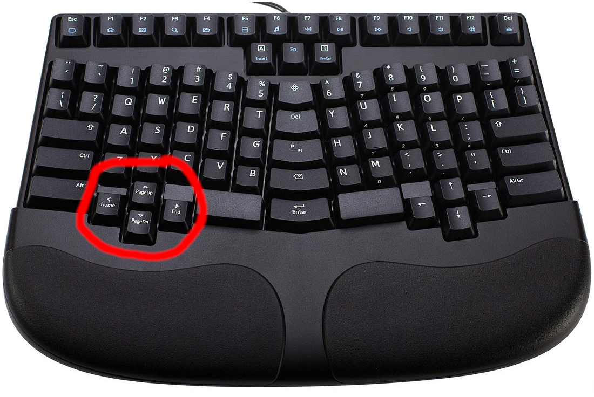
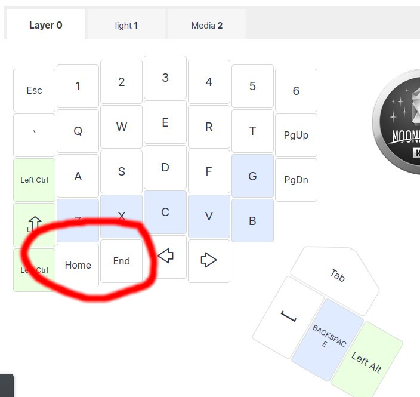
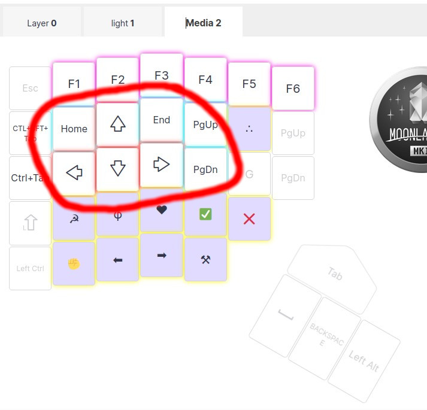

⌨️ [29/04/2023] Home & End : les meilleures touches du clavier
En matière de clavier, je trouve qu'on ne discute jamais assez de la manière dont on se déplace dans un texte.
En travaillant sous emacs j'ai découverts le monde fou du déplacement dans les textes.
Au début, comme tout le monde j'utilisais principalement les Arrow Keys (les flèches) pour me déplacer de droite à gauche et haut et bas pour passer d'une ligne à l'autre. C'est le niveau 1 du déplacement dans le texte.
Vu a quel point ma vie pro comme perso tourne autour du fait d'écrire des choses sur un clavier, ces optimisations du quoitidien me semblent plutôt importante.
EMACS étant la meillieur des religions j'ai commencé à découvrire le M-a pour remonter d'un paragraphe à l'autre, puis le C-a et le C-e pour aller au début et à la fin d'une ligne.
Je croyais le monde du déplacement dans le texte dans le texte réservé à l'élite emacienne jusqu'à ce que je devienne propriétaire de l'incroyable Truly Ergonomic Keyboard et de son jeu de flèches Home / End / PageUp / PageDown.

Cet ensemble de touche m'a vraiment permit de gagner rapididé d'écriture que je ne soupsonnais pas.
Mais, après avoir déversé de la bière 🍺 sur ce magnifique clavier 🤦, j'ai dû me résoudre à en acheter un nouveau !
Je suis donc passé a ce que je considère comme le meillieur clavier de ma vie, je parle évidement du Moonlander Mark 1 (lien).
J'ai mis beaucoup de temps avant de trouver où placer ces touches home et end, sur mon layout de base.
J'ai finalement décidé de les garder mais sans les utiliser vraiment. Sous mon pouche gauche, j'ai mis les Arrow Keys droite et gauche.

Après moultes tentatives, je me suis dit qu'il fallait les placer à un endroit qui ne soit pas trop éloigner du C-a et C-e de emacs.
Je les ai donc mit sur mon 2e layout de clavier. (Activable avec le pouce droit en KeyDown)
Ce qui me semble le choix le plus judicieu !

Je suis très content du resulat final, le PageDown et le PageUp hyper accesible, les Arrow Keys sont au milieu pour les petits déplacements dans le texte.
C'est génial, je gagne une vraie vitesse dans mes déplacements quand je sors de emacs.
Voilou, vous pouvez trouver mon layout de clavier MoonLander ici !